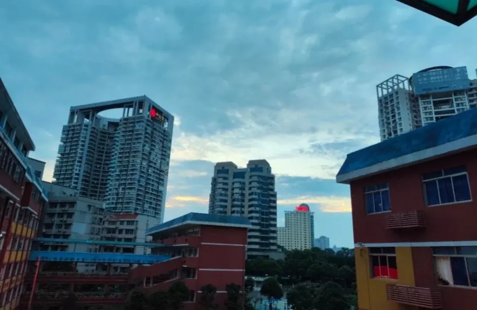
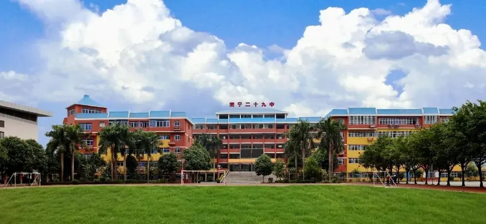
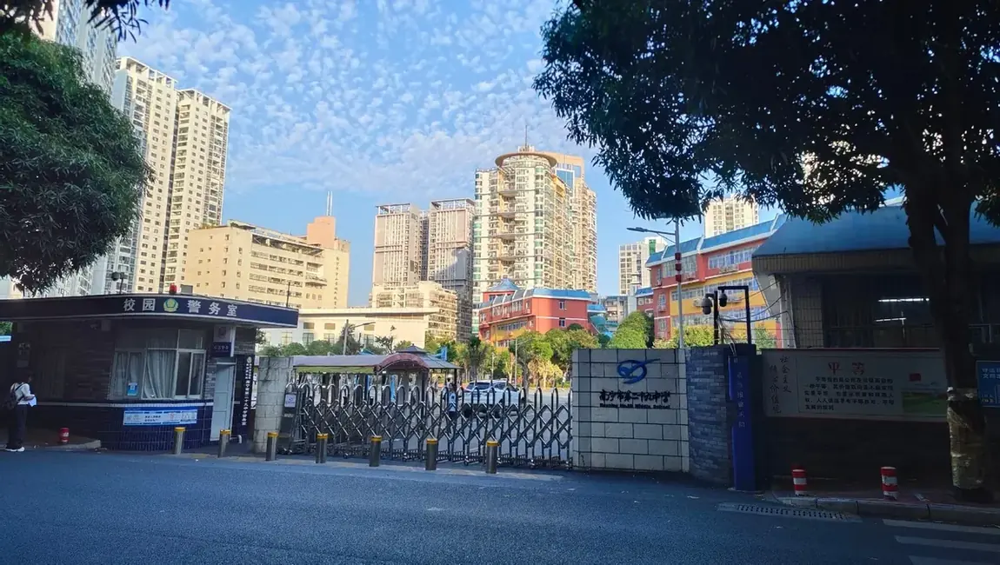
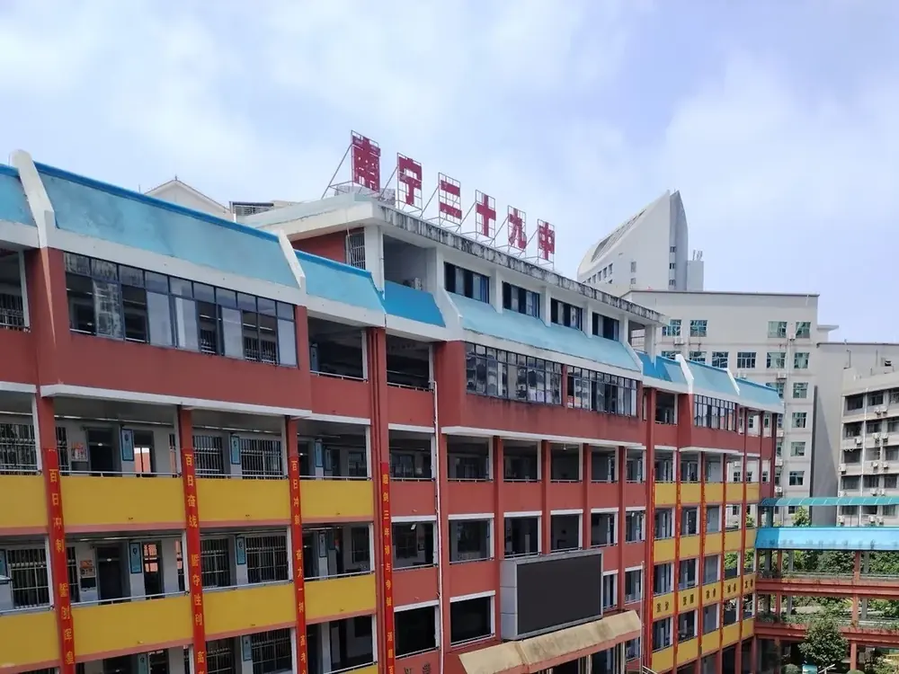
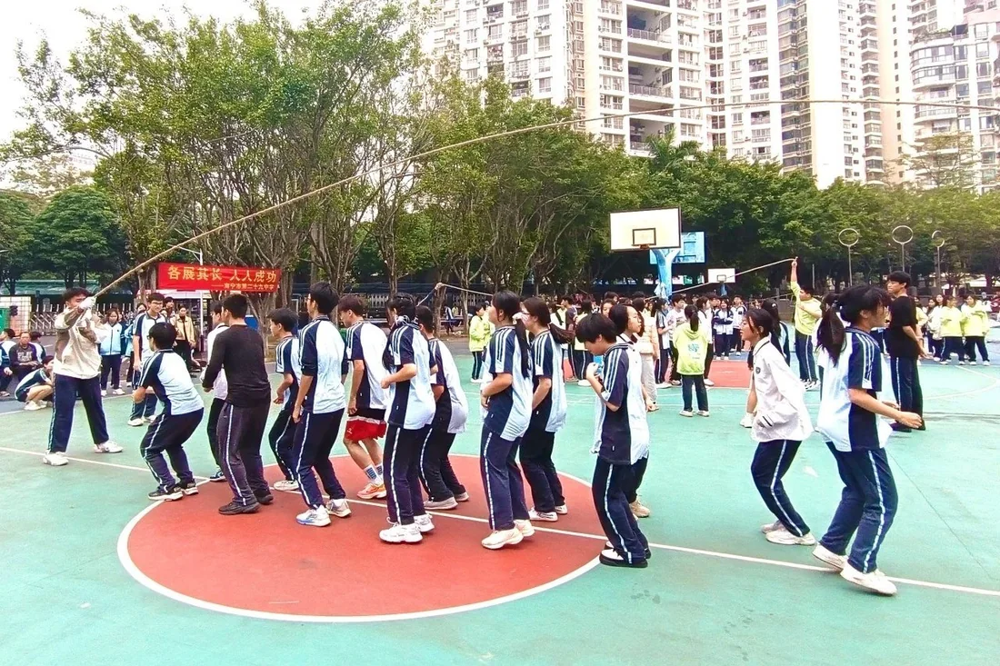
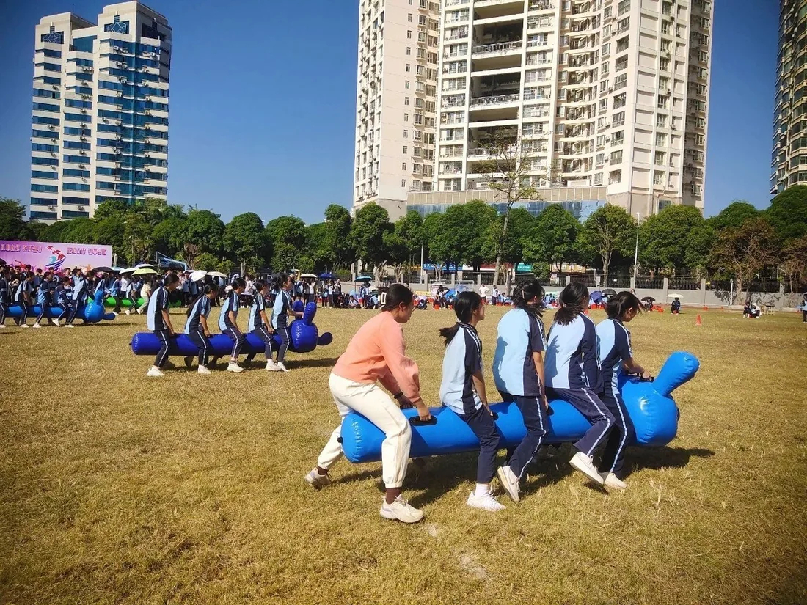
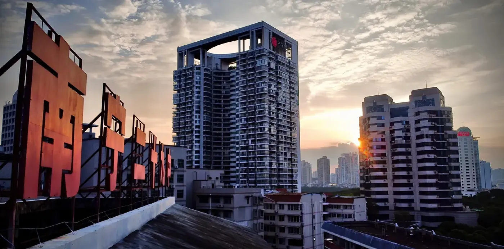
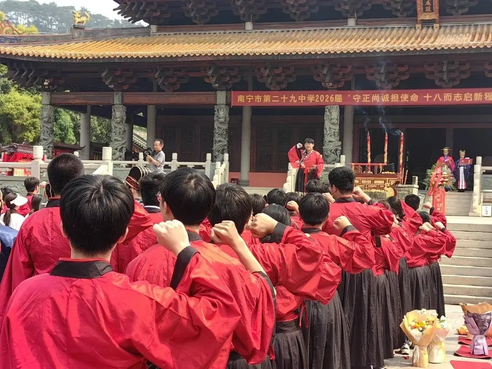

学校概况
南湖之滨，一所安静的学校。我们把“人”放在教育的正中央，让每个孩子都能被看见、被理解、被期待。
About us
南湖之滨，
一所让成长
自然发生的学校。
南宁市第二十九中学创办于 1997 年，是南宁市教育局直属公办高中，坐落于南湖之滨，毗邻南宁市中小学校外教育活动中心，是南宁市特色普通高中。
校园占地 23,664 平方米，绿化面积 9,890 多平方米，现有 29 个教学班、120 名教职工。每间教室配齐空调与多媒体设备，建有实验楼及音乐、美术、舞蹈、科创、劳动实践等专用场地。
学校秉持“守正尚诚，多元育人”的办学理念，推行“二三一”高效课堂，努力实现“低进高出，高进优出”的育人目标。
对网站内容提出意见
办学理念
守正尚诚，
多元育人。
守正守住根基，尚诚立身处世，多元让每一种禀赋都有出口。
守住课堂质量与育人底线。把国家课程开齐开好，把每一节日常课打磨扎实，让成长有稳固的根基。
诚以待人，诚以治学。老师认真教书，学生踏实求学，家校之间坦诚沟通，让信任成为校园的底色。
课程、社团、体艺、劳动实践并行。合唱团、足球社、篮球社、科创社、文创社，让每一种热爱都有地方生长。
师资
一支稳定的
教师队伍。
教职工 120 人，市学科带头人、教学骨干 36 人，高级教师 30 人，中级以上职称教师占比超过 80%。
另有研究生学历教师 15 人，多名自治区、市级优秀教师。
学校沿革
从 1997 年，
走到今天。
校址未变，校名未改。从完全中学到特色普通高中，学校一直在南湖之滨生长。
-
建校起点
为适配埌东开发区发展而创办，是当时该片区唯一公办完全中学。学校以“建新校、走新路、做新人、出新色”为建设突破口，政府投入三千余万元建设校园，开启初高中学制办学。校址即现址：青秀区金洲路26号（南湖之滨）。
-
品牌与等级夯实
获评自治区一级学校、南宁市教学改革试点学校；形成“各展其长、人人成功”办学特色，德育、艺术体育特色逐步打响，合唱、舞蹈多次在区级、全国艺术展演获奖；2018 年入选全国青少年校园篮球特色学校，艺体科创特色体系逐步成型。
-
特色高中立项建设
列入南宁市特色高中立项建设学校，持续打磨美育与多元育人路线；办学规模稳步扩张，师资梯队持续完善。
-
特色普高定型，荣誉集中收获
获评广西依法治校示范校、自治区卫生优秀学校、自治区五星级党组织；获评南宁市特色普通高中、南宁市中小学校常规管理示范校、军警民共建先进单位、民族团结进步先进集体等；毕业班质量连续多年获评南宁市高中毕业班工作“优秀学校”。
-
教学质量新里程碑
在南宁市高中阶段毕业班调研工作中获“卓越等级”；办学理念迭代升级，确立“每一个生命都精彩”核心价值观与“守正尚诚，多元育人”办学理念。
-
现在的二十九中
南宁市教育局直属公办普通高中。校园占地 23,664 ㎡，绿化面积 9,890 余㎡；教学硬件、艺体科创场地配套成熟，坚持走读制办学。
全程为“南宁市第二十九中学”，自启用后无更名记录。
自建校起即落址金洲路26号，无整体异地搬迁。
创办初期为完全中学（初中+高中），后期以高中特色办学为核心方向，打造南宁市特色普通高中。
综合管理（依法治校、常规管理、党建五星）、艺体特色（校园篮球特色校、艺术展演）、教学质量（毕业班优秀、2025“卓越等级”）。
校长寄语
既要胸怀“功成不必在我”的格局境界，
更要勇担“功成必定有我”的历史使命，
在中华民族伟大复兴的壮阔征程中扬帆起航！
学校荣誉
被看见的努力。
荣誉是过去的注脚，不是终点。它们提醒我们，把每一件小事做好。
2025
高中毕业班工作卓越等级
在南宁市 2025 届普通高中毕业班工作调研中，学校获评“卓越等级”。这是对全体师生长期努力的肯定，也是“低进高出、高进优出”的注脚。
信息来源：南宁市教育局 · 2025年12月
五星级党组织中小学校基层党组织评星定级
广西第三届中学生合唱节一等奖班级合唱组 · 自治区教育厅
南宁市特色普通高中
广西依法治校示范校
南宁市普通高中教育教学成果评价一等奖
南宁市先进单位 · 南宁市文明单位
南宁市德育工作先进单位
南宁市科普示范校
南宁市花园单位
* 部分荣誉信息整理自公开资料，具体以学校最新公布为准。
校园环境
读书、奔跑，
都有地方。
南湖的风穿过校园，三角梅沿着围墙生长。这里既有安静读书的角落，也有尽情奔跑的场地。学校为走读制，无校内宿舍。

教学楼 · 实验楼教室配齐空调与多媒体
300米田径场篮球、排球、足球等球类场地
音乐 · 美术 · 舞蹈科创 · 劳动实践专用场地
走读制无校内宿舍 · 周边生活配套便利
校园相册
一些被记住的
画面。
校门、走廊、操场、演播室。日常的片段拼在一起，就是一所学校的样子。






想更具体地了解这所学校？
对页面内容、图片版权或功能体验有意见，欢迎反馈。